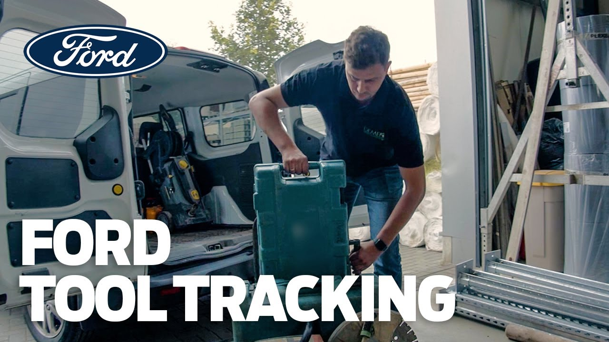

01Ford Pro tool tracking
2020 — 2022Tradespeople lose tools: left behind on a site, or stolen from the van. Together with Ford we built a system that knows where every tool is — and reminds you before you drive off without it.
- Role
- Technical lead
- Partner
- Ford R&I Center Aachen
- Field test
- 3 companies · ~11 months
- Built with
- MontiGem

▶play video-
The problem
Gardeners, plumbers and renovation crews carry expensive tools and machines in their vans. Tools get left behind on site or stolen, and every loss costs money and working time — searching, re-buying, waiting.
€450lost per van and year€38saved per vehicle and month~1 hper week saved by workers~2 hper week saved by adminsEstimates from the field test, RWTH Chair of Marketing.
-
The system
Every tool gets a small, heat- and water-resistant Bluetooth tag; every vehicle a tracking module that knows which tools are on board and reports their positions via GPS to a central server. If a tool is missing when the van is about to leave, the driver is reminded; if one moves when it shouldn’t, the owner is alerted. A web application shows everything on desktops, phones and a tablet in the vehicle: search by vehicle, storage place, tool type or name, photo tiles of the tools, and a live map of where each one was last seen.
-
Generated, not hand-written
The web application was largely generated with our MontiGem framework from UML models of the data, the user interface and standard behaviour. That made fast iterations possible, and the models became a shared language between Ford’s marketing experts, engineers, designers and the craftspeople. Two extensions grew out of the project and went back into the generator: multi-language support (German for the craftspeople, English for Ford’s managers) with an in-app translation editor, and a driving-safe tablet UI that shows less information while the vehicle is moving, based on its measured acceleration.
-
Field test
Three trade companies of different sizes around Cologne — construction and renovation, plumbing, gardening and landscaping — used the system for about eleven months. The application was improved continuously from their feedback and from usage data. Ford presented the results in 2022; the project also taught us where generated web apps reach their limits — patchy mobile coverage on site later led to a native Android app.
- BGK+24